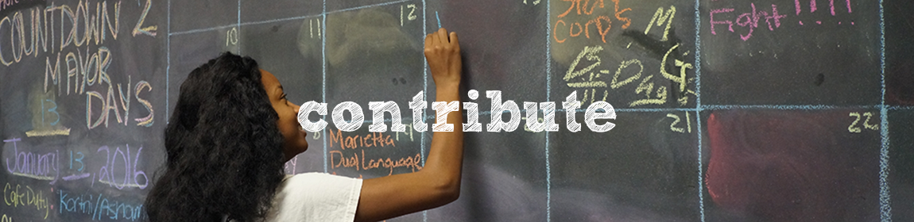
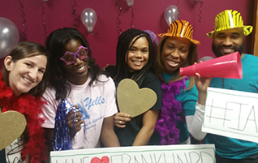

There are many ways to support YELLS and the youth we serve. Whether you can give your time, talent, or treasure, your contribution makes a real difference in the lives of young people in our community.
Volunteer with YELLS
Volunteers are the backbone of YELLS. From mentoring youth to helping with special events, there are opportunities for everyone to make a difference. Whether you can commit to a weekly schedule or just help out occasionally, we need you!
Volunteer Opportunities
- Mentoring: Build relationships with youth through our Mentoring Program
- Tutoring: Help students with homework and academic skills in our Afterschool Program
- Event Support: Assist with fundraisers, community events, and special activities
- Skills-Based Volunteering: Share your professional expertise (marketing, finance, technology, etc.)
- Board Service: Help guide our organization as a board member
Volunteer Requirements
All volunteers working directly with youth must:
- Be at least 16 years old (18+ for some positions)
- Complete a background check
- Attend volunteer orientation training
- Commit to a consistent schedule (for ongoing positions)
Contribute to YELLS

Your financial support enables YELLS to provide life-changing programs to youth in the Franklin Gateway community. As a 501(c)(3) nonprofit organization, all donations are tax-deductible to the fullest extent of the law.
Ways to Give
One-Time Donation
Make an immediate impact with a one-time gift of any amount. Every dollar helps provide programming, supplies, and support for our youth.
Monthly Giving
Become a sustaining supporter by setting up a recurring monthly donation. Monthly donors provide reliable funding that helps us plan and expand our programs.
Corporate Sponsorship
Partner with YELLS through corporate sponsorship. We offer various sponsorship levels with recognition opportunities at events and in our communications.
In-Kind Donations
We also accept donations of supplies, equipment, and services. Contact us to learn about our current needs.
Your Impact
- $25 provides school supplies for one student
- $50 sponsors a month of healthy snacks for the Afterschool Program
- $100 funds a field trip for 5 youth
- $250 provides mentoring training for 3 volunteer mentors
- $500 sponsors a youth for one semester in our programs
- $1,000 sponsors a youth for an entire year
Ready to Make a Difference?
Your donation today helps empower the next generation of community leaders.
Donate NowWork at YELLS

Join our team of dedicated professionals committed to empowering youth in the Franklin Gateway community. YELLS offers a supportive work environment where you can make a real difference every day.
Why Work at YELLS?
- Mission-driven organization with real community impact
- Collaborative, supportive team environment
- Professional development opportunities
- Competitive compensation and benefits
- Work-life balance
Current Openings
We are always looking for passionate individuals to join our team. Even if we don't have a current opening that matches your skills, we encourage you to send your resume for future consideration.
Typical positions at YELLS include:
- Program Coordinators
- Youth Development Specialists
- Afterschool Program Staff
- Administrative Support
- Development/Fundraising